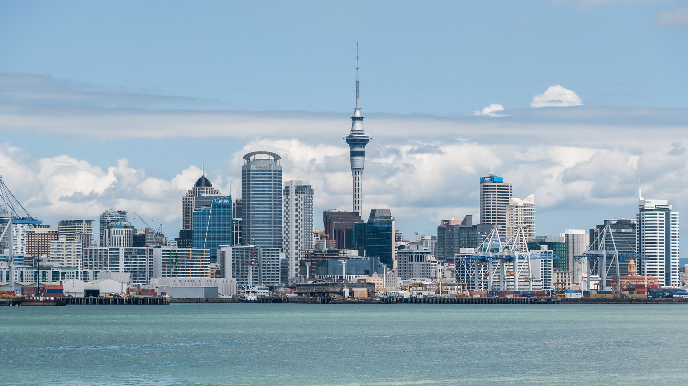
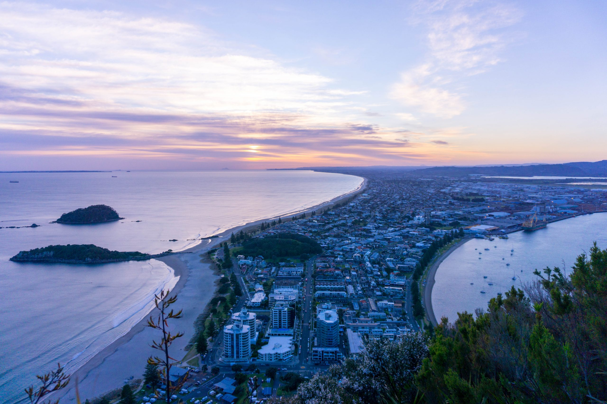
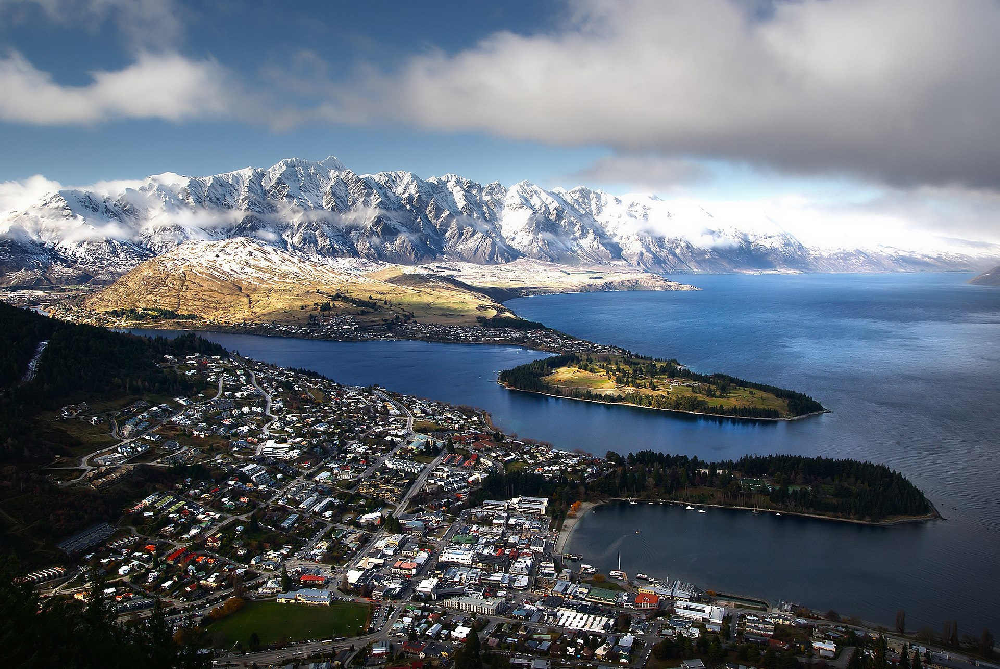

-

Auckalnd central
The Auckland Central Business District (CBD), or Auckland city centre is the geographical and economic heart of the Auckland metropolitan area.
-

Mount-Mounganui
Mount Maunganui (Māori pronunciation: [ˈmaʉŋaˌnʉi], locally /ˈmɒŋəˌnuːi/) is a major residential, commercial and industrial suburb of the Tauranga metropolitan area, located on a peninsula to the north-east of Tauranga's city centre. It was an independent town from Tauranga until the completion of the Tauranga Harbour Bridge in 1988, which connects Mount Maunganui to Tauranga's central business district.
-

Queenstown
Queenstown (Māori: Tāhuna)[3] is a resort town in Otago in the south-west of New Zealand's South Island. It has an urban population of 15,800 (June 2022).[4] The town is built around an inlet called Queenstown Bay on Lake Wakatipu, a long, thin, Z-shaped lake formed by glacial processes, and has views of nearby mountains such as The Remarkables, Cecil Peak, Walter Peak and just above the town, Ben Lomond and Queenstown Hill.
-
cape-reinga
Cape Reinga (/ˈreɪŋə/; sometimes spelled Rēinga, Māori: Te Rerenga Wairua), and officially Cape Reinga / Te Rerenga Wairua,[1] is the northwesternmost tip of the Aupouri Peninsula, at the northern end of the North Island of New Zealand. Cape Reinga is more than 100 km north of the nearest small town of Kaitaia. State Highway 1 extends all the way to the cape, but until 2010 was unsealed gravel road for the last 19 km.[2]
-
Whangarei
Whangārei (Māori: [faŋaːˈɾɛi]) is the northernmost city in New Zealand and the regional capital of Northland Region. It is part of the Whangārei District, a local body created in 1989 from the former Whangārei City, Whangārei County and Hikurangi Town councils, to administer both the city proper and its hinterland.
-
Napier
Napier is a city on the eastern coast of the North Island of New Zealand and the seat of the Hawke's Bay region. It is a beachside city with a seaport, known for its sunny climate, esplanade lined with Norfolk Pines and extensive Art Deco architecture. Napier is sometimes referred to as the "Nice of the Pacific", although that is largely outdated and a more common nick-name is 'The Art Deco Capital of the world'.
-
Taranaki
Taranaki is a region in the west of New Zealand's North Island. It is named after its main geographical feature, the stratovolcano of Mount Taranaki, also known as Mount Egmont.
-
Nelson
Nelson (Māori: Whakatū) is a city on the eastern shores of Tasman Bay / Te Tai-o-Aorere. It is the oldest city in the South Island and the second-oldest settled city in New Zealand; it was established in 1841 and became a city by royal charter in 1858.[3]
-
christchurch
Christchurch is the largest city in the South Island of New Zealand and the seat of the Canterbury Region. Christchurch lies on the South Island's east coast, just north of Banks Peninsula on Pegasus Bay
-
dunedin
Dunedin is the second-largest city in the South Island of New Zealand (after Christchurch), and the principal city of the Otago region. Its name comes from Dùn Èideann, the Scottish Gaelic name for Edinburgh, the capital of Scotland.[10] The city has a rich Scottish, Chinese[11] and Māori heritage.